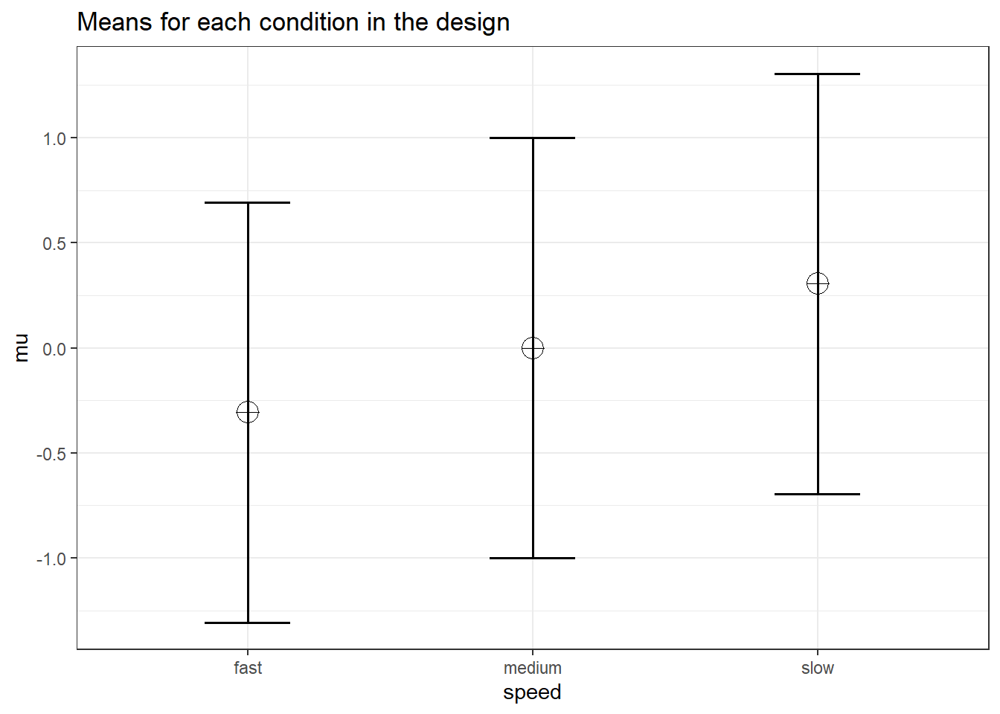
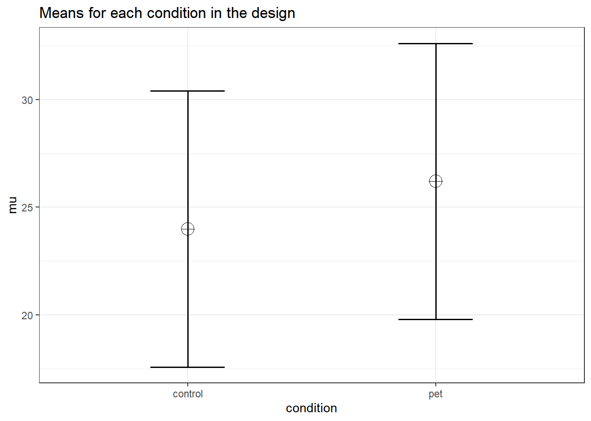
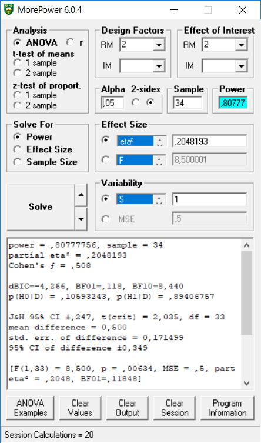
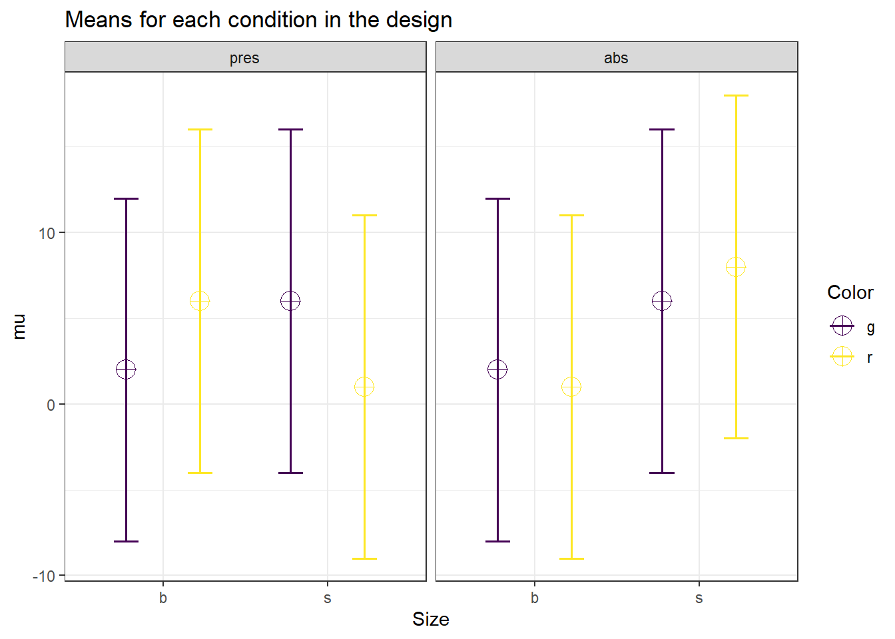
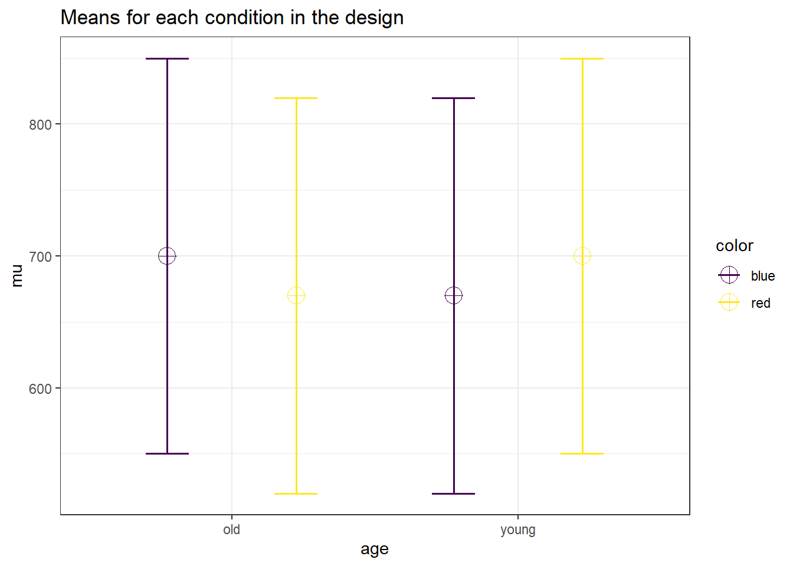
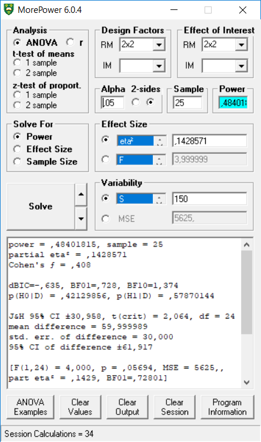
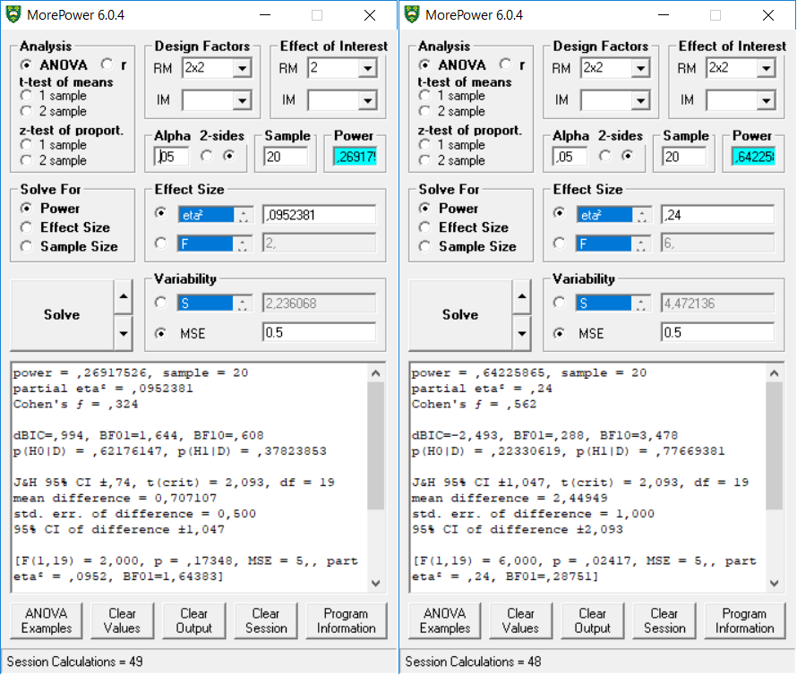

Appendix 2: Direct Comparison to MOREpower
MOREpower 6.0 by Campbell and Thompson (2012) is standalone software for power analysis for ANOVA, t-tests, correlations, and tests of proportions. It outperforms Gpower, in that it allows researchers to perform power analyses for a much wider range of designs. It allows a maximum of 9 levels per factor. Users can solve for N, power or effect size. An ANOVA effect size may be specified in terms of the effect-related variance explained (partial eta-squared) or in terms of a test statistic (F, mean square treatment [MST], or t).
Compared to Superpower, it does not provide all tests at once, it does not provide simple comparisons, it does not incorporate corrections for multiple comparisons, and it does not allow users to enter the means, sd’s, and correlations.
We can replicate the independent t-test example in MOREpower:
string <- "2b"
n <- 100
mu <- c(24, 26.2)
sd <- 6.4
labelnames <- c("condition", "control", "pet") #
# the label names should be in the order of the means specified above.
design_result <- ANOVA_design(design = string,
n = n,
mu = mu,
sd = sd,
labelnames = labelnames)
alpha_level <- 0.05
exact_result <- ANOVA_exact(design_result,
alpha_level = alpha_level,
verbose = TRUE)## Power and Effect sizes for ANOVA tests
## power partial_eta_squared cohen_f non_centrality
## condition 67.6857 0.029 0.1727 5.9082
##
## Power and Effect sizes for pairwise comparisons (t-tests)
## power effect_size
## p_condition_control_condition_pet 67.69 0.34## [1] 0.02897482## [1] 67.68572
We see the power estimates almost perfectly align with MOREpower if we enter partial eta-squared of 0.02897482, sample = 200 (MOREpower requires entering the total N, not N per condition).
We can also replicate the dependent t-test example in MOREpower.
## [1] 0.05882353mu <- mu_from_ES(K = K, ES = ES)
design = paste(K,"w",sep = "")
labelnames <- c("speed", "fast", "slow")
design_result <- ANOVA_design(design = design,
n = n,
mu = mu,
sd = sd,
r = r,
labelnames = labelnames)
alpha_level <- 0.05
exact_result <- ANOVA_exact(design_result,
alpha_level = alpha_level,
verbose = TRUE)## Power and Effect sizes for ANOVA tests
## power partial_eta_squared cohen_f non_centrality
## speed 80.7778 0.2048 0.5075 8.5
##
## Power and Effect sizes for pairwise comparisons (t-tests)
## power effect_size
## p_speed_fast_speed_slow 80.78 0.5## [1] 0.2048193## [1] 80.77775
We can also replicate the 3-group within ANOVA example in MOREpower.
## [1] 0.05882353mu <- mu_from_ES(K = K, ES = ES)
design = paste(K, "w", sep = "")
labelnames <- c("speed", "fast", "medium", "slow")
design_result <- ANOVA_design(design = design,
n = n,
mu = mu,
sd = sd,
r = r,
labelnames = labelnames)
alpha_level <- 0.05
exact_result <- ANOVA_exact(design_result,
alpha_level = alpha_level,
verbose = TRUE)## Power and Effect sizes for ANOVA tests
## power partial_eta_squared cohen_f non_centrality
## speed 96.9163 0.3304 0.7024 18.75
##
## Power and Effect sizes for pairwise comparisons (t-tests)
## power effect_size
## p_speed_fast_speed_medium 53.79 0.48
## p_speed_fast_speed_slow 98.39 0.97
## p_speed_medium_speed_slow 53.79 0.48## Anova Table (Type 3 tests)
##
## Response: y
## num Df den Df MSE F pes Pr(>F)
## speed 2 38 0.2 9.375 0.3304 0.0004904 ***
## ---
## Signif. codes: 0 '***' 0.001 '**' 0.01 '*' 0.05 '.' 0.1 ' ' 1## [1] 96.91634
We can reproduce the 2x2 ANOVA example in MOREpower.
mu = c(700, 670, 670, 700)
sigma = 150 # population standard deviation
n <- 25
sd <- 150
r <- 0.75
string = "2w*2w"
alpha_level <- 0.05
labelnames = c("age", "old", "young", "color", "blue", "red")
design_result <- ANOVA_design(design = string,
n = n,
mu = mu,
sd = sd,
r = r,
labelnames = labelnames)
## Power and Effect sizes for ANOVA tests
## power partial_eta_squared cohen_f non_centrality
## age 5.0000 0.0000 0.0000 0
## color 5.0000 0.0000 0.0000 0
## age:color 48.4018 0.1429 0.4082 4
##
## Power and Effect sizes for pairwise comparisons (t-tests)
## power effect_size
## p_age_old_color_blue_age_old_color_red 27.4 -0.28
## p_age_old_color_blue_age_young_color_blue 27.4 -0.28
## p_age_old_color_blue_age_young_color_red 5.0 0.00
## p_age_old_color_red_age_young_color_blue 5.0 0.00
## p_age_old_color_red_age_young_color_red 27.4 0.28
## p_age_young_color_blue_age_young_color_red 27.4 0.28## [1] 0.1428571This result reproduces the analysis in MOREpower, for a 2x2 within design, with a sample of 25, and eta-squared of 0.1428571.

Let’s replicate the 2x2x2 full between analysis (total N = 400, effects sizes differ for each test):
# With 2x2x2 designs,
# the names for paired comparisons can become very long.
# So here I abbreviate terms:
# Size, Color, and Cognitive Load, have values:
# b = big, s = small, g = green,
# r = red, pres = present, abs = absent.
labelnames <- c("Size", "b", "s", "Color", "g", "r",
"Load", "pres", "abs") #
design_result <- ANOVA_design(design = "2b*2b*2b",
#sample size per group
n = 50,
#pattern of means
mu = c(2, 2, 6, 1, 6, 6, 1, 8),
sd = 10, #standard deviation
labelnames = labelnames)## Power and Effect sizes for ANOVA tests
## power partial_eta_squared cohen_f non_centrality
## Size 70.3301 0.0157 0.1263 6.25
## Color 5.0000 0.0000 0.0000 0.00
## Load 7.8953 0.0006 0.0253 0.25
## Size:Color 32.1727 0.0057 0.0758 2.25
## Size:Load 84.9123 0.0224 0.1515 9.00
## Color:Load 7.8953 0.0006 0.0253 0.25
## Size:Color:Load 84.9123 0.0224 0.1515 9.00
##
## Power and Effect sizes for pairwise comparisons (t-tests)
## power effect_size
## p_Size_b_Color_g_Load_pres_Size_b_Color_g_Load_abs 5.00 0.0
## p_Size_b_Color_g_Load_pres_Size_b_Color_r_Load_pres 50.82 0.4
## p_Size_b_Color_g_Load_pres_Size_b_Color_r_Load_abs 7.85 -0.1
## p_Size_b_Color_g_Load_pres_Size_s_Color_g_Load_pres 50.82 0.4
## p_Size_b_Color_g_Load_pres_Size_s_Color_g_Load_abs 50.82 0.4
## p_Size_b_Color_g_Load_pres_Size_s_Color_r_Load_pres 7.85 -0.1
## p_Size_b_Color_g_Load_pres_Size_s_Color_r_Load_abs 84.39 0.6
## p_Size_b_Color_g_Load_abs_Size_b_Color_r_Load_pres 50.82 0.4
## p_Size_b_Color_g_Load_abs_Size_b_Color_r_Load_abs 7.85 -0.1
## p_Size_b_Color_g_Load_abs_Size_s_Color_g_Load_pres 50.82 0.4
## p_Size_b_Color_g_Load_abs_Size_s_Color_g_Load_abs 50.82 0.4
## p_Size_b_Color_g_Load_abs_Size_s_Color_r_Load_pres 7.85 -0.1
## p_Size_b_Color_g_Load_abs_Size_s_Color_r_Load_abs 84.39 0.6
## p_Size_b_Color_r_Load_pres_Size_b_Color_r_Load_abs 69.69 -0.5
## p_Size_b_Color_r_Load_pres_Size_s_Color_g_Load_pres 5.00 0.0
## p_Size_b_Color_r_Load_pres_Size_s_Color_g_Load_abs 5.00 0.0
## p_Size_b_Color_r_Load_pres_Size_s_Color_r_Load_pres 69.69 -0.5
## p_Size_b_Color_r_Load_pres_Size_s_Color_r_Load_abs 16.77 0.2
## p_Size_b_Color_r_Load_abs_Size_s_Color_g_Load_pres 69.69 0.5
## p_Size_b_Color_r_Load_abs_Size_s_Color_g_Load_abs 69.69 0.5
## p_Size_b_Color_r_Load_abs_Size_s_Color_r_Load_pres 5.00 0.0
## p_Size_b_Color_r_Load_abs_Size_s_Color_r_Load_abs 93.39 0.7
## p_Size_s_Color_g_Load_pres_Size_s_Color_g_Load_abs 5.00 0.0
## p_Size_s_Color_g_Load_pres_Size_s_Color_r_Load_pres 69.69 -0.5
## p_Size_s_Color_g_Load_pres_Size_s_Color_r_Load_abs 16.77 0.2
## p_Size_s_Color_g_Load_abs_Size_s_Color_r_Load_pres 69.69 -0.5
## p_Size_s_Color_g_Load_abs_Size_s_Color_r_Load_abs 16.77 0.2
## p_Size_s_Color_r_Load_pres_Size_s_Color_r_Load_abs 93.39 0.7## [1] 0.0156936598 0.0000000000 0.0006373486 0.0057070387 0.0224438903
## [6] 0.0006373486 0.0224438903This result is nicely reproduced in MOREpower, both for the 2x2 effects, and the 2x2x2 between effects.

And finally, let’s replicate the 2x2 full within analysis.
mu = c(2,1,4,2)
n <- 20
sd <- 5
r <- c(
0.8, 0.5, 0.4,
0.4, 0.5,
0.8
)
string = "2w*2w"
labelnames = c("A", "a1", "a2", "B", "b1", "b2")
design_result <- ANOVA_design(design = string,
n = n,
mu = mu,
sd = sd,
r = r,
labelnames = labelnames)## Power and Effect sizes for ANOVA tests
## power partial_eta_squared cohen_f non_centrality
## A 26.9175 0.0952 0.3244 2
## B 64.2259 0.2400 0.5620 6
## A:B 26.9175 0.0952 0.3244 2
##
## Power and Effect sizes for pairwise comparisons (t-tests)
## power effect_size
## p_A_a1_B_b1_A_a1_B_b2 26.92 -0.32
## p_A_a1_B_b1_A_a2_B_b1 39.70 0.40
## p_A_a1_B_b1_A_a2_B_b2 5.00 0.00
## p_A_a1_B_b2_A_a2_B_b1 64.23 0.55
## p_A_a1_B_b2_A_a2_B_b2 13.60 0.20
## p_A_a2_B_b1_A_a2_B_b2 76.52 -0.63## [1] 0.0952381 0.2400000 0.0952381## [1] 26.91752 64.22587 26.91752This result is also reproduced in MOREpower, both for the main effect, and the 2x2 within interaction effect.

References
Campbell, Jamie, and Valerie A. Thompson. 2012. “MorePower 6.0 for Anova with Relational Confidence Intervals and Bayesian Analysis.” Behavior Research Methods 44: 1255–65. https://doi.org/10.3758/s13428-012-0186-0.